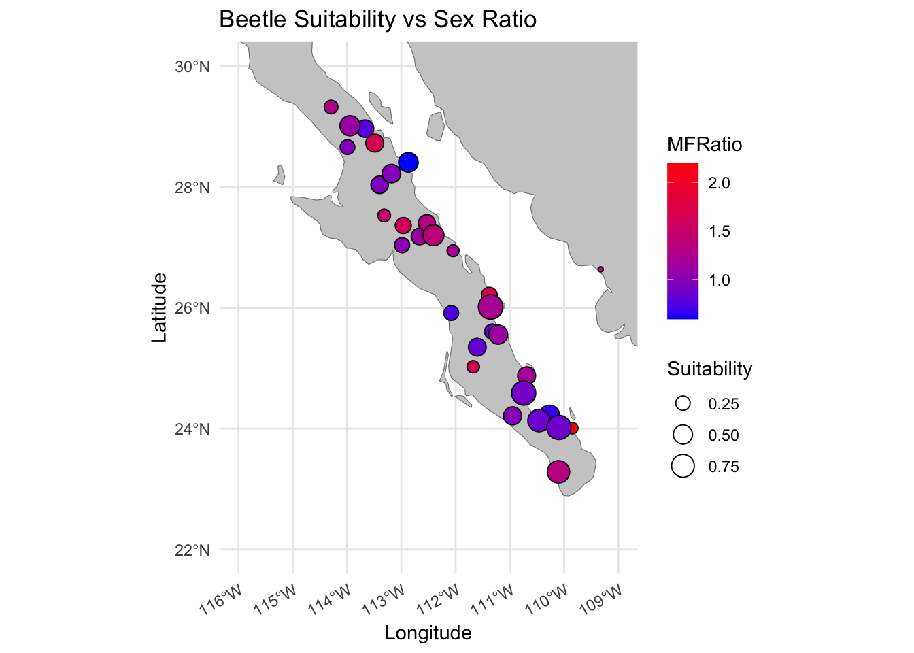

needed_libraries <- c("sf",
"maps",
"units",
"GGally",
"raster",
"mapproj",
"leaflet",
"rnaturalearth",
"rnaturalearthdata")
# Determines which libraries you do not have
# already installed.
need_inst <- setdiff( needed_libraries,
rownames( installed.packages()) )
# Instrall the neccessary ones.
if( length( need_inst ) ) {
install.packages( need_inst, dependencies = TRUE )}
# Load the libraries
library(sf)
library(maps)
library(units)
library(GGally)
library(raster)
library(mapproj)
library(leaflet)
library(rnaturalearth)
library(rnaturalearthdata)Spatial Data HW
Abstract
This document demonstrates spatial data analysis using geospatial libraries in R. It includes data loading, preprocessing, and visualization using interactive maps.

Introcuction
This document focuses on analyzing site-level data from the Sonoran Desert bark beetle (Araptus attenuatus). The purpose is to load and preprocess the data, and create an interactive map to visualize the locations of the beetle sightings.
Spatial Libraries
The following code defines the set of necessary libraries for the next few weeks and then figures out which (potential) subset you need to install. It then installs them all in one call. It will not load them into your session, you’ll have to do that later in your code chunks.
The Data - Preprocessing
The data for this is some site-level data from the Sonoran Desert bark beetle. The URL is in the next chunk, and is currently being hosted on my class Github repository. Load it in.
beetle.url <- "https://raw.githubusercontent.com/dyerlab/ENVS-Lectures/master/data/Araptus_Disperal_Bias.csv"
beetle.data <- read.csv(beetle.url, stringsAsFactors = FALSE)
str(beetle.data)'data.frame': 31 obs. of 9 variables:
$ Site : chr "32" "73" "93" "const" ...
$ Males : int 40 11 25 18 22 23 49 19 64 16 ...
$ Females : num 27 5 21 11 15 18 50 26 63 19 ...
$ Suitability : num 0.0563 0.1455 0.1627 0.1744 0.188 ...
$ MFRatio : num 1.48 2.2 1.19 1.64 1.47 ...
$ GenVarArapat: num 0.144 0.137 0.163 0.28 0.16 ...
$ GenVarEuphli: num 0.2185 0.2535 0.1325 0.2348 0.0809 ...
$ Latitude : num 26.6 24 26.9 25 27.5 ...
$ Longitude : num -109 -110 -112 -112 -113 ...summary(beetle.data) Site Males Females Suitability
Length:31 Min. : 9.00 Min. : 5.00 Min. :0.0563
Class :character 1st Qu.:16.00 1st Qu.:15.50 1st Qu.:0.2732
Mode :character Median :21.00 Median :21.00 Median :0.3975
Mean :25.68 Mean :23.52 Mean :0.4276
3rd Qu.:31.50 3rd Qu.:29.00 3rd Qu.:0.5442
Max. :64.00 Max. :63.00 Max. :0.9019
MFRatio GenVarArapat GenVarEuphli Latitude
Min. :0.5938 Min. :0.0500 Min. :0.0500 Min. :23.29
1st Qu.:0.8778 1st Qu.:0.1392 1st Qu.:0.1777 1st Qu.:24.95
Median :1.1200 Median :0.2002 Median :0.2171 Median :26.64
Mean :1.1598 Mean :0.2006 Mean :0.2203 Mean :26.44
3rd Qu.:1.3618 3rd Qu.:0.2592 3rd Qu.:0.2517 3rd Qu.:27.78
Max. :2.2000 Max. :0.3379 Max. :0.5122 Max. :29.33
Longitude
Min. :-114.3
1st Qu.:-113.1
Median :-112.0
Mean :-112.0
3rd Qu.:-110.8
Max. :-109.3 Basic Data Visualization
# Scatter plot of the sites
library(ggplot2)
ggplot(beetle.data, aes(x = Longitude, y = Latitude)) +
geom_point(color = "blue", alpha = 0.6) +
labs(
title = "Geographical Distribution of Beetle Observation Sites",
x = "Longitude",
y = "Latitude"
) +
theme_minimal()Interactive Map
# make a quick leaflet map here to get an idea of
library(leaflet)
leaflet(data = beetle.data) %>%
addTiles() %>%
addMarkers(~Longitude, ~Latitude,
label = ~paste("Site", Site),
popup = ~paste("<b>Site:</b>", Site,
"<br><b>MFRatio:</b>", MFRatio,
"<br><b>Males:</b>", Males,
"<br><b>Females:</b>", Females)) %>%
addProviderTiles("OpenTopoMap")Converting to sf Objects
Convert the dataset to a Simple Features (sf) object with a CRS of EPSG:4326.
# convert raw data to simple features in your data.frame
library(sf)
beetle_sf <- st_as_sf(beetle.data,
coords = c("Longitude", "Latitude"),
crs = 4326)
print(st_crs(beetle_sf))Coordinate Reference System:
User input: EPSG:4326
wkt:
GEOGCRS["WGS 84",
ENSEMBLE["World Geodetic System 1984 ensemble",
MEMBER["World Geodetic System 1984 (Transit)"],
MEMBER["World Geodetic System 1984 (G730)"],
MEMBER["World Geodetic System 1984 (G873)"],
MEMBER["World Geodetic System 1984 (G1150)"],
MEMBER["World Geodetic System 1984 (G1674)"],
MEMBER["World Geodetic System 1984 (G1762)"],
MEMBER["World Geodetic System 1984 (G2139)"],
ELLIPSOID["WGS 84",6378137,298.257223563,
LENGTHUNIT["metre",1]],
ENSEMBLEACCURACY[2.0]],
PRIMEM["Greenwich",0,
ANGLEUNIT["degree",0.0174532925199433]],
CS[ellipsoidal,2],
AXIS["geodetic latitude (Lat)",north,
ORDER[1],
ANGLEUNIT["degree",0.0174532925199433]],
AXIS["geodetic longitude (Lon)",east,
ORDER[2],
ANGLEUNIT["degree",0.0174532925199433]],
USAGE[
SCOPE["Horizontal component of 3D system."],
AREA["World."],
BBOX[-90,-180,90,180]],
ID["EPSG",4326]]Questions
- How far apart (in km) are the sites Constitución (
const) and San Francisquito (sfran)?
library(sf)
const <- beetle_sf[beetle_sf$Site == "const", ]
sfran <- beetle_sf[beetle_sf$Site == "sfran", ]
distance <- st_distance(const, sfran) %>%
as.numeric() / 1000
print(paste("The distance between Constitución and San Francisquito is", distance, "km"))[1] "The distance between Constitución and San Francisquito is 290.089983608901 km"- Is there a correlation between habitat suitability and the ratio of males to female beetles sampled at each locale?
correlation <- cor(beetle.data$Suitability, beetle.data$MFRatio,
use = "complete.obs")
cat("The correlation coefficient between habitat suitability and MFRatio is:", round(correlation, 3))The correlation coefficient between habitat suitability and MFRatio is: -0.4- Make a plot using
ggplotof the data with suitability as the size of the points and the sex ratio as the fill color.
library(ggplot2)
library(rnaturalearth)
library(rnaturalearthdata)
world <- ne_countries(scale = "medium", returnclass = "sf")
ggplot() +
geom_sf(data = world,
fill = "gray80",
color = "gray50") +
geom_point(data = beetle.data, aes(x = Longitude,
y = Latitude,
size = Suitability,
fill = MFRatio),
shape = 21,
color = "black") +
scale_fill_gradient(low = "blue", high = "red") +
labs(title = "Beetle Suitability vs Sex Ratio",
x = "Longitude",
y = "Latitude",
size = "Suitability",
fill = "MFRatio") +
theme_minimal() +
coord_sf(xlim = c(-116, -109),
ylim = c(22, 30)) +
theme(axis.text.x = element_text(angle = 30,
hjust = 1))
- Reproject the data and plot it again using an EPSG code defined for Mexico UTM zone 12N.
library(sf)
library(ggplot2)
library(rnaturalearth)
beetle_utm <- st_transform(beetle_sf,
crs = 32612)
world <- ne_countries(scale = "medium",
returnclass = "sf")
world_utm <- st_transform(world,
crs = 32612)
ggplot() +
geom_sf(data = world_utm,
fill = "gray80",
color = "gray50") +
geom_sf(data = beetle_utm, aes(size = Suitability,
fill = MFRatio),
shape = 21,
color = "black") +
scale_fill_gradient(low = "blue", high = "red") +
labs(title = "Beetle Suitability vs Sex Ratio (UTM Zone 12N)",
x = "Longitude (UTM)",
y = "Latitude (UTM)",
size = "Suitability",
fill = "MFRatio") +
coord_sf(xlim = c(st_bbox(beetle_utm)["xmin"],
st_bbox(beetle_utm)["xmax"]),
ylim = c(st_bbox(beetle_utm)["ymin"],
st_bbox(beetle_utm)["ymax"])) +
theme_minimal()